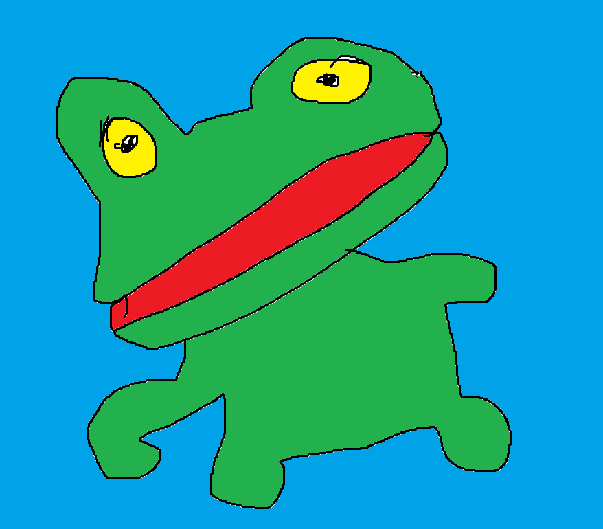

WELCOME TO MY GALLERY!
FROG IN WELL
Frog in well is undoubtebly one of my favorite works. It represents the freedom the frog feels without realising it is stuck forever in a well. This artwork was inspired by a frog i met named Javier. Javier was stuck in a well for days, but never tried to climb out. "I might not be free, but i am well" are the words he spoke and lived by.

MY CHEESE IS NOW THE QUEENS
I painted My cheese is now the queens to show my patriotic love for the british empire. I never really met the queen, but being an artist i painted myself giving her cheese. Cheese is a symbol that represents many feelings. The circular structure of the cheese represents how one must "ROLL ON" even through the hardest of times. My hardest time was when the queen nearly had me executed for sneaking into her chambers.

SACRIFICE
This is my final artwork. Sacrifice was painted when my father forced me to stop paining and get a real job. I bought my first laptop in 1855 and tried to learn java. Syntax error was the first thing that appeared on screen. Words i shall never forget. The pain of sacrificing my artistic talents for a peaseants job of creating programs is scorched into the core of this painting. This... is the last painting i shall paint. -Lord McMuffin